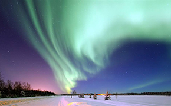
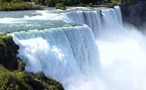

自然奇观简介
天然景观和人为景观的自然方面的总称。天然景观是指受到人类间接、轻微或偶尔影响而原有自然面貌未发生明显变化的景观，如极地、高山、大荒漠、大沼泽、热带雨林以及某些自然保护区等。人为景观是指受到人类直接影响和长期作用使自然面貌发生明显变化的景观，如乡村、工矿、城镇等地区。人为景观又称为文化景观，它虽然是人类作用和影响的产物，但发展规律却服从于自然规律，必须按自然规律去建设和管理，才能达到预期的目的。自然景观涵义中的人为景观不包括其经济、社会等方面的特征
雪山
雪山：台湾的次高山，海拔高度3886米。雪山位于苗栗县泰安乡和台中县和平乡的交界，为雪山山系的最高峰，在百岳中仅次于玉山。雪山是雪山山脉的中心点，由此向外呈放射状延伸，支脉绵亘北台湾。全山是由赤褐色页岩、砂板岩所构成。
北极光
北极光，是出现于星球北极的高磁纬地区上空的一种绚丽多彩的发光现象，由来自地球磁层或太阳的高能带电粒子流使高层大气分子或原子激发（或电离）而产生。北极附近的阿拉斯加、北加拿大以及中国的黑龙江省漠河市是观赏北极光的最佳地点。
黄果瀑布
著名的黄果树大瀑布，是贵州第一胜景，中国第一大瀑布，也是世界最阔大壮观的瀑布之一。黄果树瀑布分布着雄、奇、险、秀风格各异的大小18个瀑布，形成一个庞大瀑布“家族”，被大世界吉尼斯总部评为世界上最大的瀑布群，列入世界吉尼斯记录。